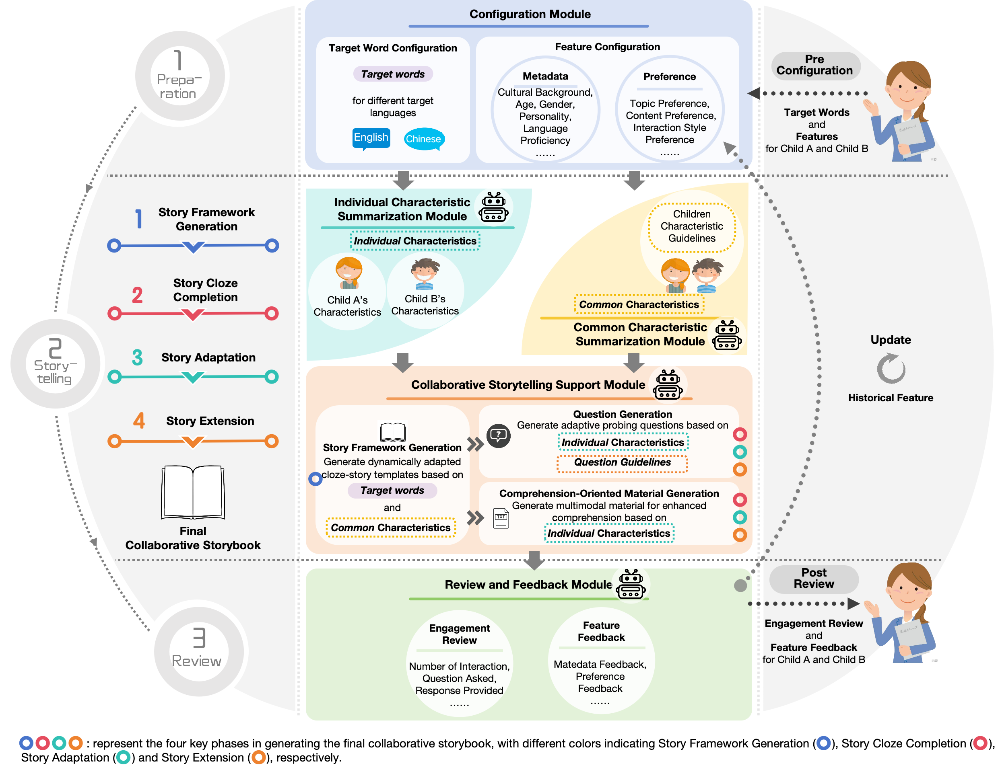
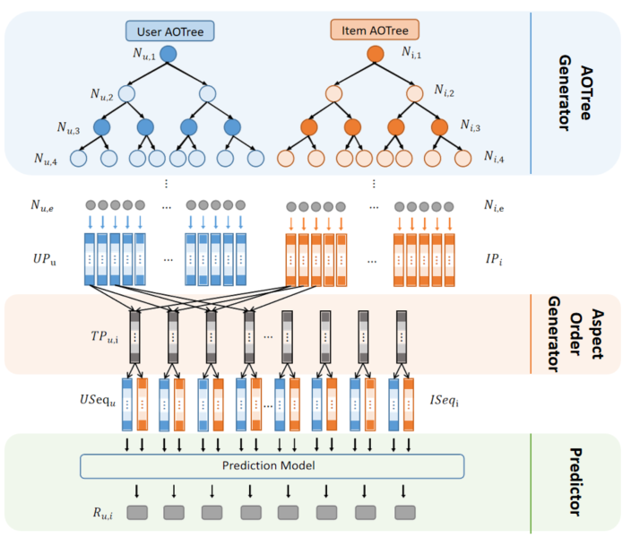
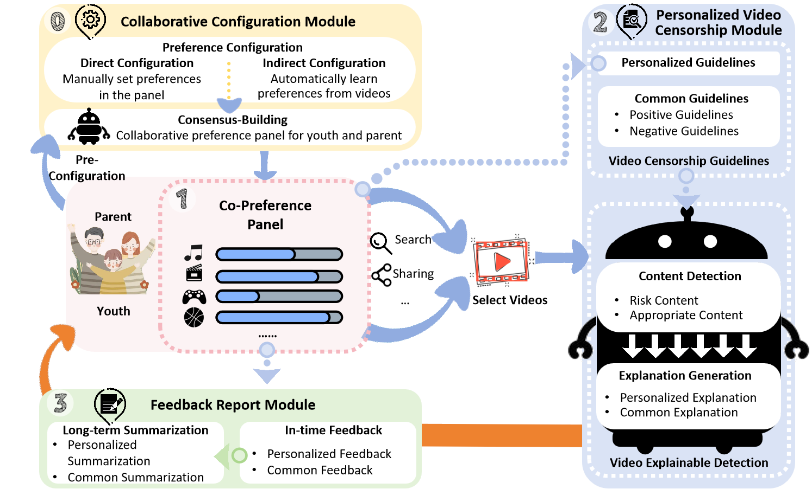
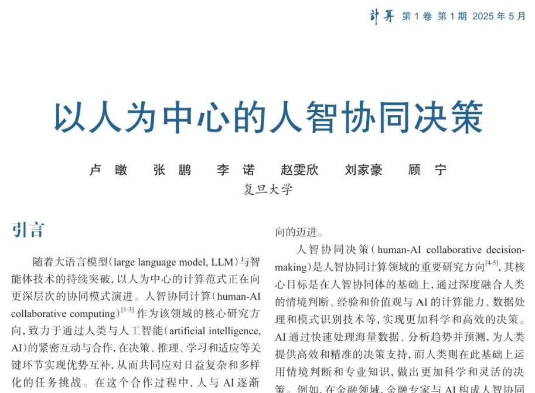
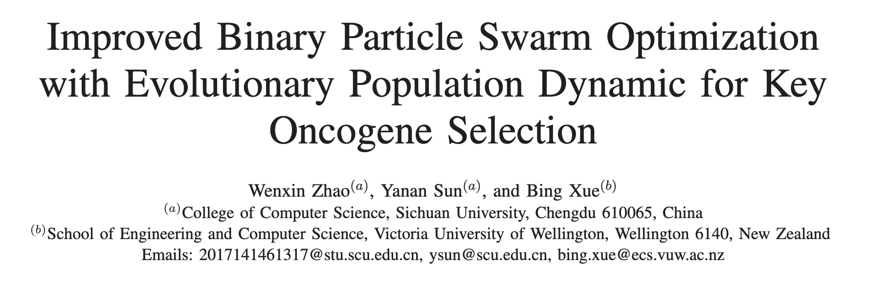

Wenxin Zhao
Ph.D. Student at Fudan University
School of Computing and Intelligence Technology
Collaborative Information and Systems Laboratory (CISL)
✨Everything Wins✨
Hi! I am Wenxin (Aveen), a Ph.D. Student in School of Computing and Intelligence Technology at Fudan University , working with Prof. Ning Gu in the Collaborative Information and Systems Laboratory (CISL). I entered Fudan University directly into the Ph.D. program after completing my Bachelor's degree. Before that, I received my Bachelor's degree in Computer Science and Technology from Sichuan University .
My research lies at the intersection of Human-Computer Interaction (HCI), Human-AI Interaction (HAI), Computer-Supported Cooperative Work (CSCW), and Social Computing. I investigate how human-centered AI can support collaboration, learning, and decision-making across diverse social contexts, including those involving children, families, educators, and other stakeholders. Through designing and evaluating AI-supported interactive systems and conducting user studies, I explore how emerging technologies can facilitate collaborative interactions, meaningful connections, shared learning, and human development.
I am passionate about understanding people, observing everyday interactions, and exploring how technology shapes the ways we interact, learn, and grow together.
News
- 2026.07 Presented at the CCF 8th CSCW and Social Computing Summer School, Beijing.
- 2026.04 🌟 Oral presentation at CHI 2026, Barcelona, Spain. [Paper] [Report]
- 2026.01 Presented at the Fudan University “Wujie” Workshop (Session 1), Shanghai.
- 2025.11 Presented at the 20th National Conference on Computer Supported Cooperative Work and Social Computing (ChineseCSCW 2025), Guangzhou, Guangdong.
- 2025.09 Presented at the “Mind to Mind: Love and Relationships in the Age of AI” Symposium, Shanghai.
- 2025.07 Presented at the CCF 7th CSCW and Social Computing Summer School, Hangzhou, Zhejiang.
- 2025.06 🌟 Oral presentation at ICWSM 2025, Copenhagen, Denmark. [Paper] [Report]
- 2025.04 🌟 Oral presentation at CHI 2025, Yokohama, Japan. [Paper] [Report]
- 2024.10 Presented at the Fudan University Computer Science and Technology Discipline Week Doctoral Forum, Shanghai.
- 2021.09 Joined the Collaborative Information and Systems Laboratory (CISL) at Fudan University as a Ph.D. student.
Publications
† indicates equal contribution.
2026

SparkTales: Facilitating Cross-Language Collaborative Storytelling through Coordinator-AI Collaboration
CHI 2026 — Proceedings of the 2026 CHI Conference on Human Factors in Computing Systems
2025

AOTree: Aspect Order Tree-based Model for Explainable Recommendation
ICWSM 2025 — Proceedings of the Nineteenth International AAAI Conference on Web and Social Media

YouthCare: Building a Personalized Collaborative Video Censorship Tool to Support Parent-Child Joint Media Engagement
CHI 2025 — Proceedings of the 2025 CHI Conference on Human Factors in Computing Systems

2020

Improved Binary Particle Swarm optimization with Evolutionary Population Dynamic for Key Oncogene Selection
SSCI 2020 — IEEE Symposium Series on Computational Intelligence
Awards
- 2021–Present Fudan University Doctoral Academic Scholarship (First Class, Second Class)
- 2017–2021 National Scholarship; Sichuan University Comprehensive Scholarship (First Class, Second Class)
- 2017–2021 Sichuan University Outstanding Student Leader; Outstanding Communist Youth League Member; Outstanding Graduate
- 2017–2021 “Internet+” College Student Innovation and Entrepreneurship Competition (Provincial Bronze Award; University-Level First, Second, and Third Prizes)
Life
I love life and try to embrace it wholeheartedly — staying present, exploring new experiences, and appreciating the beauty in both the big moments and the little things.
Interests & Skills: K-pop & Jazz Dance 💃 · Guzheng (Grade 10) 🎵 · Travel ✈️ · Social Media Content Creation 📱
Experiences: Shanghai International Film Festival 🎬 · Museum Tours & Art Exhibitions 🖼️ — Botticelli and the Renaissance · Master Self-Portraits from the Uffizi